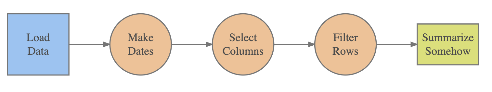
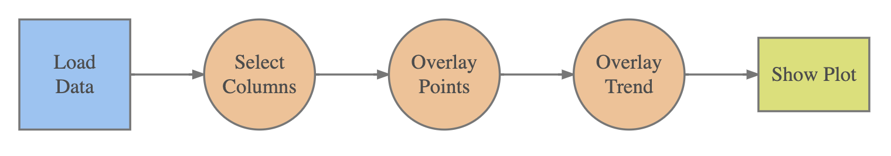
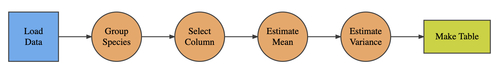
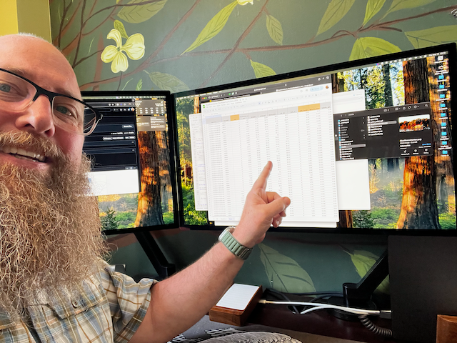

Tidyverse
Topic Guide
- Action verbs
- Workflows
- Strategies
R Data Workflow
Describe the daytime air temperatures at the Rice Rivers Center for February, 2014 by day of the week.
To do this, we have the following general workflow.

Action Verbs
Data Operators
There are a finite number of action verbs that can be used on raw data. They are combined to yield meaningful inferences from our data.
- Is there more sun on Fridays?
- What is the distribution of high-tide depths for each day in January?
- Is there a relationship between salinity & pH?
Select
Identify only subset of data columns that you are interested in using.
Filter
Use only some subset of rows in the data based upon qualities within the columns themselves.
Arrange
Reorder the data using values in one or more columns to sort.
Mutate
Convert one data type to another, scaling, combining, or making any other derivative component.
Summarize
Perform operations on the data to characterize trends in the raw data as summary statistics.
Group
Partition the data set into groups based upon some taxonomy of categorization.
Workflows
Combinations Yield Inferences
The manner in which we organize these action verbs yields an infinite number of combinations.



The Treachery of Images
The Pipe Operator
In R we use this grammar.
It is also possible to use this pipe character:
To take the values in data and pass them as if you entered the data as the first argument to the function Y().
Chain-pipe
Pipes can be chained together into a single operation (you can mix and match pipe types but I find myself basically using the shorter one because I’m a lazy programmer).
Examples
The Data
The data we will be working with consist of data from the Rice Rivers Center.
The Raw Data
The raw data are published from a Google Spreadsheet.

The Data in R
So, let us load it in here.
[1] "DateTime" "RecordID"
[3] "PAR" "WindSpeed_mph"
[5] "WindDir" "AirTempF"
[7] "RelHumidity" "BP_HG"
[9] "Rain_in" "H2O_TempC"
[11] "SpCond_mScm" "Salinity_ppt"
[13] "PH" "PH_mv"
[15] "Turbidity_ntu" "Chla_ugl"
[17] "BGAPC_CML" "BGAPC_rfu"
[19] "ODO_sat" "ODO_mgl"
[21] "Depth_ft" "Depth_m"
[23] "SurfaceWaterElev_m_levelNad83m"Column Selection
Using the column numbers instead of names.
DateTime PAR WindDir PH
Length:8199 Min. : 0.000 Min. : 0.00 Min. :6.43
Class :character 1st Qu.: 0.000 1st Qu.: 37.31 1st Qu.:7.50
Mode :character Median : 0.046 Median :137.30 Median :7.58
Mean : 241.984 Mean :146.20 Mean :7.60
3rd Qu.: 337.900 3rd Qu.:249.95 3rd Qu.:7.69
Max. :1957.000 Max. :360.00 Max. :9.00
NA's :1 Named Column Selection
Column names are probably better than column numbers
Additional assistance from RStudio via pop-ups.
Longer term readability (like next Tuesday & Beyond!)

RStudio for a data frame in memoryData Pliars

The dplyr library defines a grammar of data manipulation, providing a consistent set of verbs that help you solve the most common data manipulation challenges using select, filter, arrange, mutate, group_by, and summarise functionality.
It is part of tidyverse
Select Tidy
In tidyverse we can use the column names and do not need to be quoted.
Selecting Several
The select() function allows you to choose many columns of data to work with.
Selecting to Rearrange
There are times when we want to
[1] "DateTime" "RecordID"
[3] "PAR" "WindSpeed_mph"
[5] "WindDir" "AirTempF"
[7] "RelHumidity" "BP_HG"
[9] "Rain_in" "H2O_TempC"
[11] "SpCond_mScm" "Salinity_ppt"
[13] "PH" "PH_mv"
[15] "Turbidity_ntu" "Chla_ugl"
[17] "BGAPC_CML" "BGAPC_rfu"
[19] "ODO_sat" "ODO_mgl"
[21] "Depth_ft" "Depth_m"
[23] "SurfaceWaterElev_m_levelNad83m"Selecting to Rearrange
Love the everything() function.
[1] "RecordID" "ODO_mgl"
[3] "PH" "DateTime"
[5] "PAR" "WindSpeed_mph"
[7] "WindDir" "AirTempF"
[9] "RelHumidity" "BP_HG"
[11] "Rain_in" "H2O_TempC"
[13] "SpCond_mScm" "Salinity_ppt"
[15] "PH_mv" "Turbidity_ntu"
[17] "Chla_ugl" "BGAPC_CML"
[19] "BGAPC_rfu" "ODO_sat"
[21] "Depth_ft" "Depth_m"
[23] "SurfaceWaterElev_m_levelNad83m"Filter
The function filter() works to select records (rows) based upon some criteria.
Combinations of Filters
Arrange
We can sort entire data.frame objects based upon the values in one or more of the columns using the arrange() function.
Reverse Sorting Order
To reverse the order, use the negative operator on the column name object in the function.
Cominations of Sorting
You can also sort using several criteria.
Mutations
The mutate() function creates new columns of data.
Mutations
[1] "POSIXct" "POSIXt" Simultaneous Mutations
You can make several mutations in one call or you can pipe several mutation events at one time.
Summarize
The summarize() function derives inferences from the current data.frame and produces a new one.
Group & Summarize
The group_by() function allows you to arbitrarily pull together subset of data and prepare them to be worked on by something like summary().
# A tibble: 3 × 3
Month `Air Temp` `Water Temp`
<ord> <dbl> <dbl>
1 January 34.7 3.68
2 February 39.7 5.29
3 March 42.6 7.96Stratgies
Flows
Here are some strategies to consider.
- Do not think that you have to do the whole thing at once. I typically build up the workflow, one line at a time. Make sure the output from the previous line is what you think it should be then add the next one.
- Keep your code open and airy, it makes it easier to read and to catch any logical errors that may arise.
- You can pipe into a lot of different functions. In fact, any function that takes a data frame can be the recipient of a pipe. While developing a workflow, I will often pipe into things like
head(),summary(), orView()to take a look at what is coming out of my workflow to make sure it resembles what I think it should look like.
Quoted Names
There are times when working with data that we may want to use reasonable names.
[1] "DateTime" "RecordID"
[3] "PAR" "WindSpeed_mph"
[5] "WindDir" "AirTempF"
[7] "RelHumidity" "BP_HG"
[9] "Rain_in" "H2O_TempC"
[11] "SpCond_mScm" "Salinity_ppt"
[13] "PH" "PH_mv"
[15] "Turbidity_ntu" "Chla_ugl"
[17] "BGAPC_CML" "BGAPC_rfu"
[19] "ODO_sat" "ODO_mgl"
[21] "Depth_ft" "Depth_m"
[23] "SurfaceWaterElev_m_levelNad83m"Quoted Names
If the names are set reasonably in the workflow, then they will be piped directly into tables and figures correctly. Here is a fully formed output from R.
Tabular Output
So far, we’ve been showing the output as raw R output in the console or in Markdown. However, let’s take it up a notch and get a bit more formal and use a package that will make professional looking tables.
Here is the official GitHub repository for the project.
Using kable
Simply pipe the data into the kable() function.
Options to kable
| Month | Ambient Air | Water Surface |
|---|---|---|
| January | 1.50 | 3.68 |
| February | 4.30 | 5.29 |
| March | 5.89 | 7.96 |
For more options see ?kable
Making Fancier Tables
There is a second package, kableExtra, that adds a lot more functionality to the display of tabular output.
Here is a great overview of the various customization that is available.